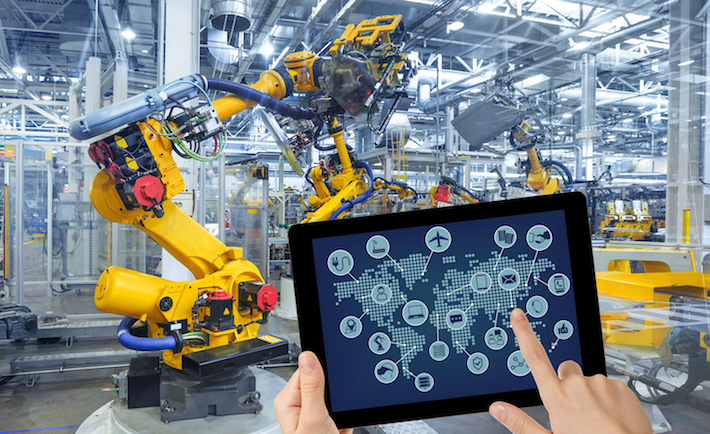
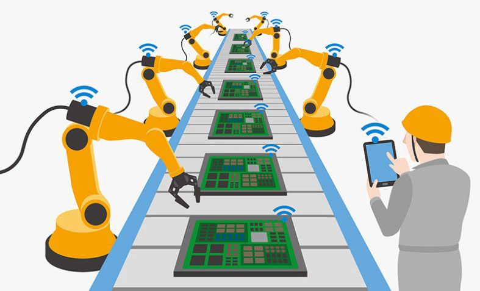

Automatizacion
Definicion de Marx para la automatizacion
Es descripta por Karl Marx como un proceso de absorción en la máquina de «las fuerzas productivas
generales
del cerebro social» tales como «el saber y las destrezas», que de esta manera aparecen como un
atributo del
capital más que como un producto del trabajo social.

Como funciona la automatizacion (segun marketing)
Segun empresarios, conservadores y personas con gran nivel de poder adquisitivo llaman a la
automatizacion como la revolucion de el ser humano
como la solucion para el sufrimiento de las personas, ya que ellos piensan que las personas no
quieren o no desean trabajar cosa que no esta mas alejada de la realidad,
la reflexion ya esta sobre la mesa, actualmente en amazon hay sistemas que se retroalimentan unos
con los otros para una mayor eficiencia y reducir el coste de los trabajadores.
La realidad como siempre esta modificada por estos conservadores para seguir mintiendo y
manipulando, la realidad es que la automatizacion pudo haber sido una herramienta para hacer mas
facil y seguros los trabajos,
claro con la misma paga ya que la meta es que el humano tenga una vida mas digna, pero esto no es la
verdad, la automatizacion esta para quitarnos el empleo, y dejar condiciones aun mas precarias a las
personas que menos tienen
ya que una maquina es mas facil y barata que mantener que un ser humano.

Que podemos hacer nosotros como ingenieros
Lo primero que hay que entender es que nosotros como programadores somos los que buscamos hacer mas
eficiente el trabajo, pero hay que tener una moral muy fuerte y una conciencia social real,
lo que podemos hacer es no automatizar al 100% de el trabajo, estamos obligados a dejar muchas mas
oportunidades de empleos para manipular estas HERRRAMIENTAS, no deberiamos de hacer un reemplazo del
ser humano ya que el trabajo es fundamental para la vida de cada uno,
en cambio deberiamos de hacer programas que agilicen el trabajo para el humano.